弹出列表收成一套：评审板
w00029 t04。nb-ui 里有五个弹出列表（DropdownMenu、Select、Menubar、ContextMenu、QuickPick），加上编辑器 Composer 的候选菜单 PromptMenuPanel，外框已经共用，列表项各画各的。这一套要把列表项、分组、分隔线、滚动条与截断高度收成共用件，高亮、选中、圆角各定一种，再做一个不抢焦点的候选菜单给 Composer 和编辑器的斜杠菜单用。
本轮只问两件：高亮（鼠标悬停的项、键盘方向键停在的项）和选中（已选的值、勾上的项）各用哪一种。圆角、滚动条、截断高度和候选菜单留到后面几轮。图都是 Lab 里的真实组件或用主题变量画的草稿，nbook 主题。
前两轮已定：高亮中性叠色、选中左侧勾选列、项的圆角 5px（外框 10、内边距 4）、一档 28px 行高与 13px 字，下面的图都按它画。这一轮问两件：长列表最多显示几项，以及 Composer 候选菜单底部的按键提示。
长列表最多显示几项 待定
项多时列表在第 N 项之后截断、可以滚动；截在下一项的中间，露出半项，一眼看出下面还有。右边是悬浮滑块（6px 宽）。现在各组件各算各的：Select 默认 6 项半、紧凑档 5 项，计算时按 32px 行高算，DropdownMenu 实际是 26px，算出来的高度对不上；Composer 候选菜单截在整 8 项（不露半项）；QuickPick 整个浮层最高 560px。定下来后所有弹出列表共用一份计算。
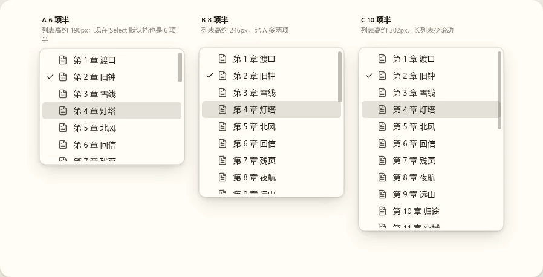
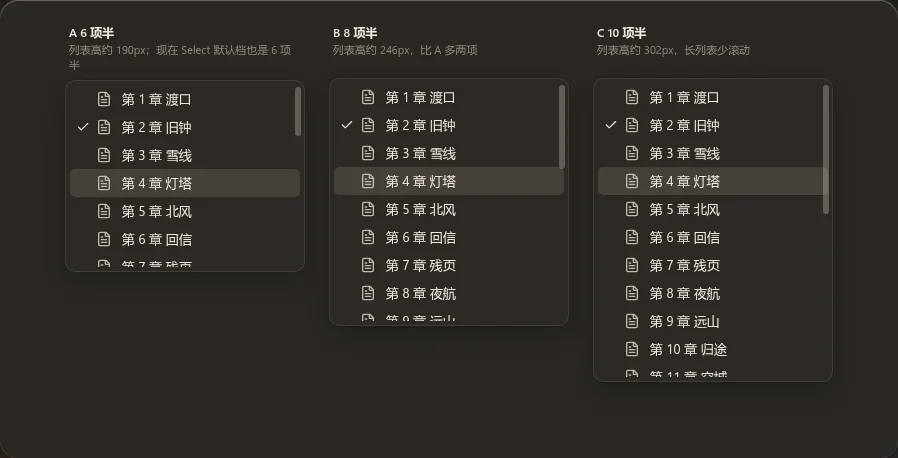
A 6 项半
列表高约 190px。
B 8 项半
列表高约 246px。
C 10 项半
列表高约 302px。
Composer 候选菜单要不要底部的按键提示 待定
在 Composer 里打 @ 弹出的候选菜单，现在底部有一行“↑↓ 选择、Enter 确认、Esc 关闭”。这个菜单不抢焦点：光标留在输入框里，菜单贴着光标弹出，编辑器的斜杠菜单之后也用它。编辑器的斜杠菜单（w00025 t08）已定不放按键提示。
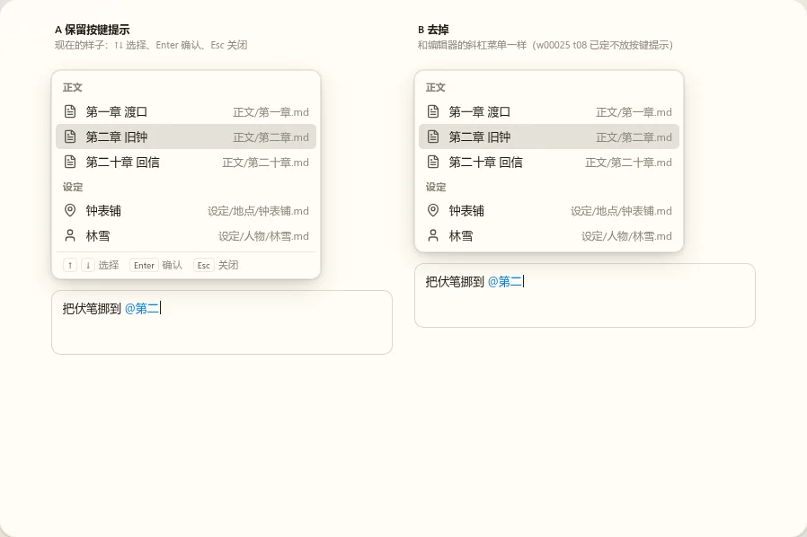
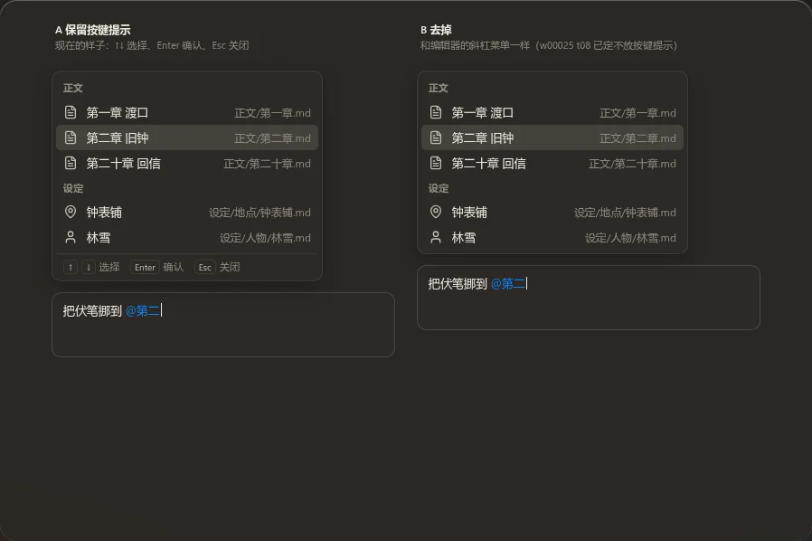
A 保留
现在的样子。
B 去掉
与斜杠菜单一致。
窄屏（390px）：B

第 1 轮已定：高亮用中性叠色，选中用左侧勾选列，下面的图都按它画。这一轮问列表项的圆角与行高。每个候选画两张列表：上面是动作菜单（DropdownMenu、右键菜单、Menubar 一类），下面是选值列表（Select 一类）。
列表项的圆角 已定：B 项 5px
设计语言要求同心圆角：项的圆角 = 外框圆角 − 描边 − 内边距，所以候选给的是“外框圆角、内边距”这一对。现在 nbook 主题是外框 8、内边距 6，推出来只剩 2px，高亮的底色几乎是直角；QuickPick 外框写死 14px，Composer 候选菜单自己写 10px，三处各不相同。
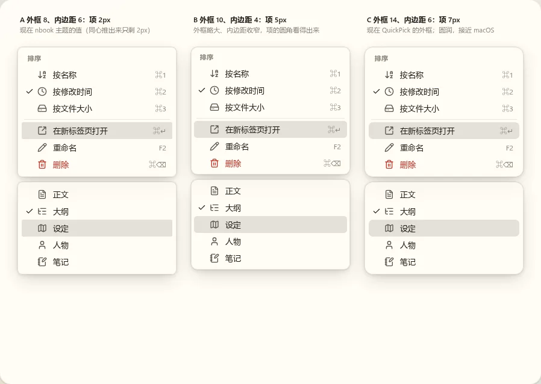
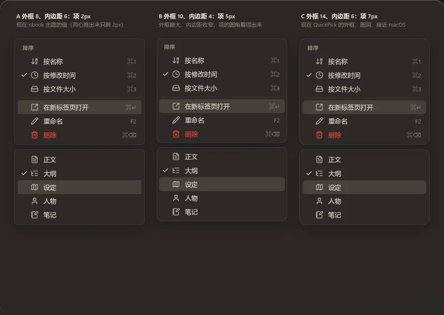
A 外框 8、内边距 6：项 2px
现在 nbook 的值。
B 外框 10、内边距 4：项 5px
外框略大，内边距收窄。
C 外框 14、内边距 6：项 7px
现在 QuickPick 的外框，圆润。
--radius-menu 与浮层内边距），macOS 主题仍按自己的值推。窄屏（390px）：B

列表项的行高与字号 已定：A 一档 28px、13px
现在五种：DropdownMenu 26px、12px 字；Menubar 28px、12px；Select 与右键菜单约 31.5px、13px；Composer 候选菜单 32px、13px；QuickPick 的两行项 48px（带说明的项另算，不在这题里）。圆角按上一题推荐的 B 画。
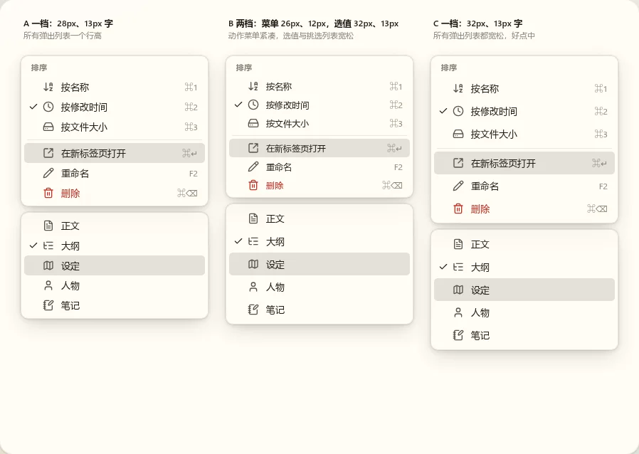
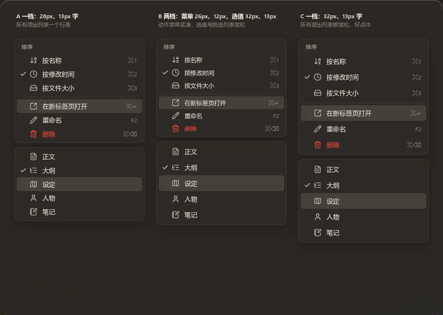
A 一档：28px、13px 字
所有弹出列表一个行高。
B 两档
动作菜单 26px、12px 字；选值与挑选列表 32px、13px 字。
C 一档：32px、13px 字
所有弹出列表都宽松，好点中。
窄屏（390px）：B

现状：同一件事各画各的 参考
六个列表各打开一份，每个里有一项高亮、一项选中（悬停态用键盘当前项代替）。
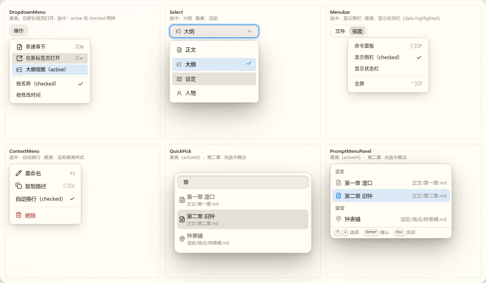
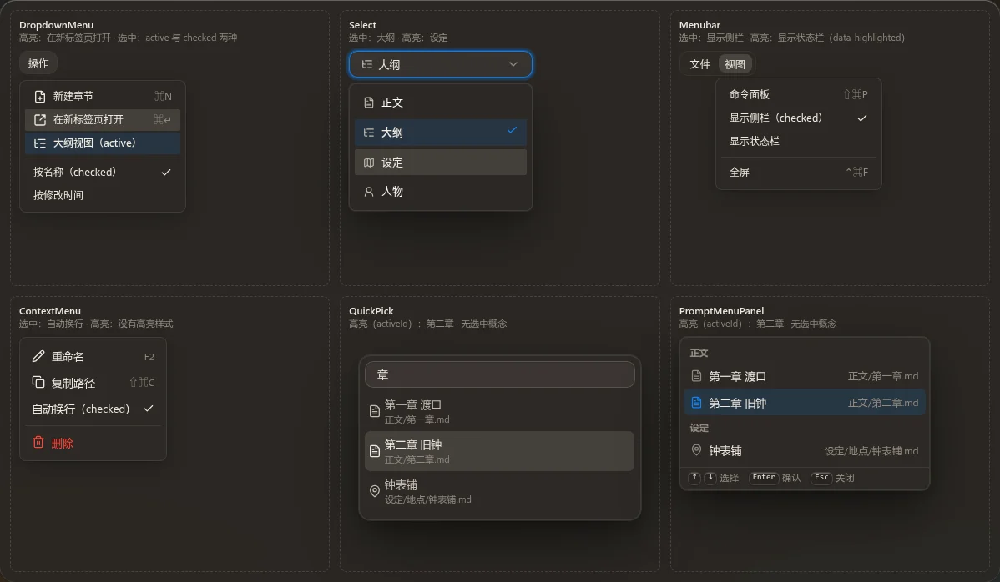
| 组件 | 高亮 | 选中 | 菜单项圆角 | 行高 |
|---|---|---|---|---|
| DropdownMenu | 中性叠色 | 两种：active 强调色淡底、不画勾；勾选项右侧正文色勾，勾会顶掉快捷键 | 2px | 26px |
| Select | 中性叠色，只跟焦点 | 强调色淡底、中等字重、右侧强调色勾；选中那行比别的高约 1px | 2px | 31.5px |
| Menubar | 没有 | 右侧正文色勾 | 2px | 28px |
| ContextMenu | 没有（只有危险项悬停时有红底） | 右侧正文色勾 | 2px | 31.5px |
| QuickPick | 中性叠色，其余项文字压暗 | 没有选中概念 | 7px | 48px（两行） |
| PromptMenuPanel | 强调色淡底 | 没有选中概念 | 6.4px | 32px |
要点：Menubar 与右键菜单里，鼠标停在项上、方向键移过去都没有任何底色，是现在就有的缺陷；同一个强调色淡底，在 Select 与 DropdownMenu 里表示“选中”，在 Composer 候选菜单里表示“高亮”。行高五种、圆角三种，后面几轮再定。
高亮用哪一种 已定：A 中性叠色
同一张样例列表：分组标题、带图标与快捷键的项、一项禁用、一项危险项；“在新标签页打开”处于高亮。
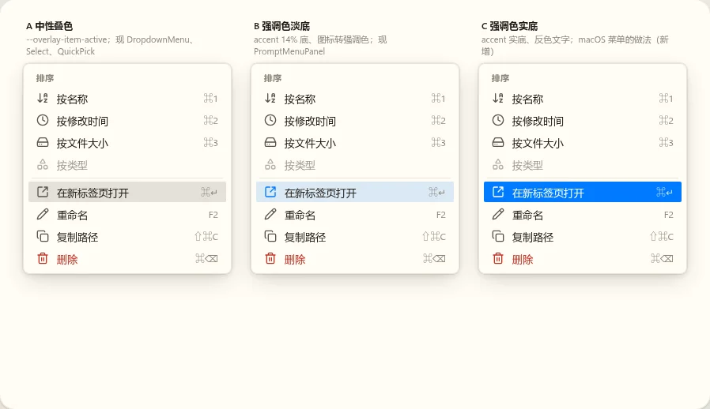
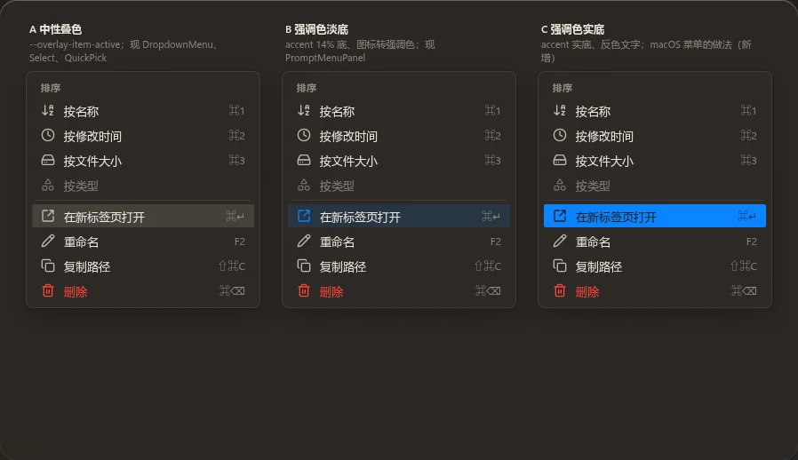
A 中性叠色
现在 DropdownMenu、Select、QuickPick 用的。底色是正文色的一层薄叠色，不带颜色。
B 强调色淡底
现在 Composer 候选菜单用的，图标转强调色。
C 强调色实底
macOS 菜单的做法，反色文字（新增）。


选中用哪一种 已定：A 左侧勾选列
同一张样例列表，高亮按 A（中性叠色）；“按修改时间”选中，下一项“按文件大小”同时高亮，看两种状态挨在一起时分不分得清。
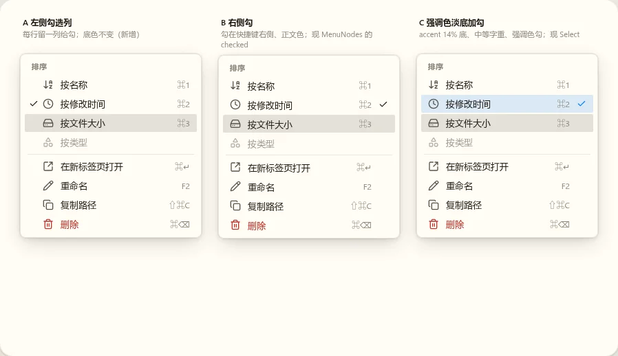
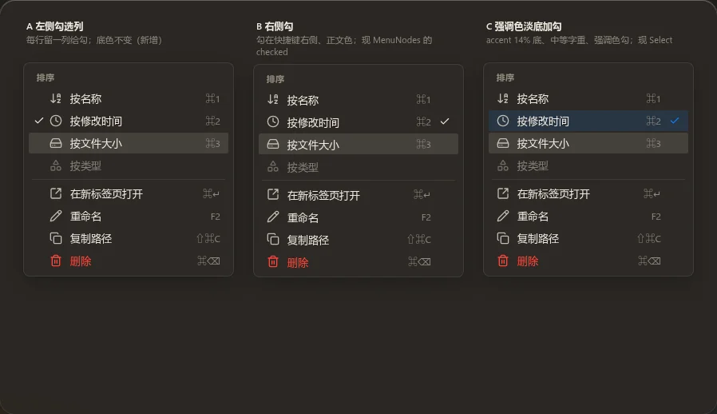
A 左侧勾选列
每行在图标前留一列给勾，底色不变（新增）。勾和图标在同一侧，扫一眼最快；每行多占一列宽度。
B 右侧勾
勾在快捷键右侧、正文色，底色不变。现在三个菜单的勾选项就是这样（快捷键会被勾顶掉，统一时一并修好，图里已是修好后的）。
C 强调色淡底加勾
现在 Select 的做法：淡底、中等字重、强调色勾。